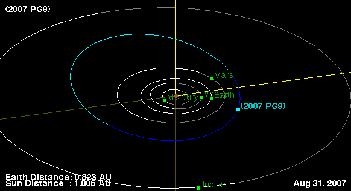

Tenagra Western Australia is credited with its first minor planet discovery. Given the preliminary designation 2007 PG9, the discovery was listed together with the observations from D21 Shenton Park in the MPC summary dated 28 August 2007.
Update: The asteroid was subsequently numbered and named (391496) Colineldridge, recognising Colin Eldridge’s contribution to astronomy education and outreach in Western Australia. The name and discovery details are recorded in the IAU WGSBN Bulletin of 1 May 2023 (page 13).
Orbit prediction (courtesy of the JPL Small-Body Database Browser):
